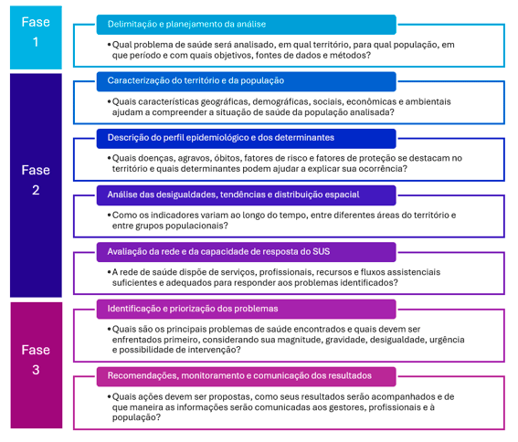
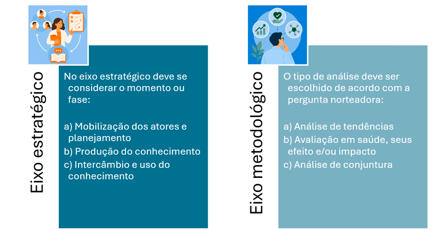
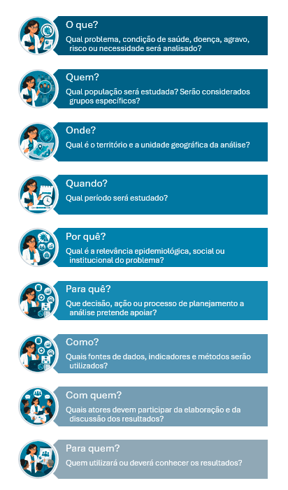
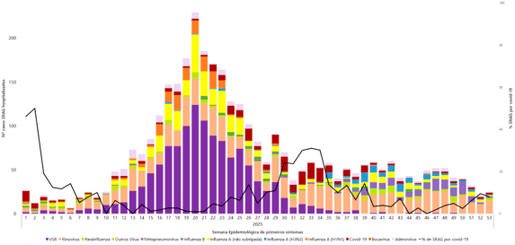
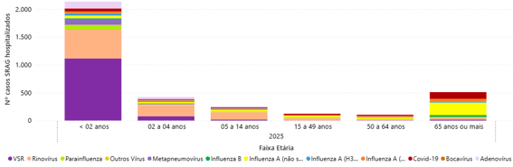
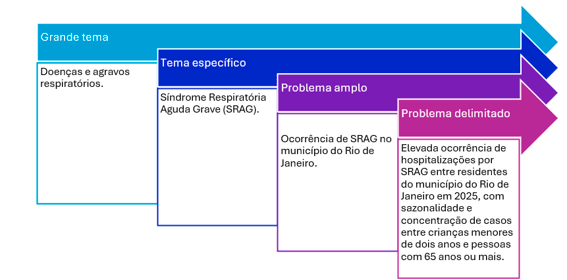

Módulo 1 | Aula 3
Elaborando uma ASIS - 1
Elaborando uma Análise de Situação de Saúde: aspectos práticos
Agora que resgatamos os conceitos-chave para a elaboração de uma ASIS, vamos entender os elementos necessários para sua construção. A ASIS deve ser apresentada como um documento técnico que articula dados, indicadores e informações para a compreensão da situação de saúde de uma população. Mais do que reunir tabelas e gráficos, ela deve analisar os problemas identificados, seus determinantes e as desigualdades existentes, produzindo evidências que apoiem a definição de prioridades, o planejamento de intervenções e a tomada de decisão em saúde. Nesse sentido, é importante conhecer alguns dos tópicos que devem ser abordados. Na figura a seguir, estão listados alguns dos principais elementos que devem ser considerados para a elaboração de uma ASIS e as perguntas estratégicas para apoiá-los na construção.
Figura 1. Elementos que compõem uma ASIS: da delimitação e planejamento à comunicação dos resultados.

Fonte: Elaborada pela autora a partir de Ministério da Saúde e UFG (2015).
FASE 1. Delimitação e planejamento da análise
Antes de acessar as bases de dados ou calcular indicadores, é necessário definir com clareza o que será analisado, por que a análise é necessária e como seus resultados poderão ser utilizados. A delimitação evita análises muito amplas, desconectadas das necessidades da gestão ou incompatíveis com os dados, o tempo e os recursos disponíveis (Ministério da Saúde, 2023; Ministério da Saúde; UFG, 2015).
Há dois eixos complementares que devem ser considerados para organizar a ASIS: (1) o eixo estratégico, relacionado à mobilização dos atores e à utilização do conhecimento; e o (2) eixo metodológico, relacionado ao tipo de análise que será realizada. Essa distinção ajuda a compreender que uma ASIS não é apenas uma atividade técnica de produção de indicadores, pois ela também deve ser planejada para influenciar decisões e ações (Ministério da Saúde; UFG, 2015, p. 19-22; Choi, 2005).

Fonte: Elaborada pela autora a partir de Ministério da Saúde e UFG (2015).
Assim, é importante formular algumas perguntas iniciais: o que será analisado? Em qual população? Em qual território? Em que período? Por que essa análise é necessária? Para que seus resultados serão utilizados? Quais dados e métodos permitirão realizá-la?

Fonte: Elaborada pela autora (2026).
A ASIS deve produzir conhecimento oportuno, isto é, adequado ao tempo, ao território, à população e ao contexto em que uma decisão precisa ser tomada. A escolha do objeto também deve considerar se as fontes são acessíveis, se os dados podem ser analisados pela equipe e se o método está de acordo com sua capacidade técnica e com os recursos disponíveis (Ministério da Saúde; UFG, 2015, p. 12-14; Eco, 2015, p. 33).
A partir deste tópico vamos utilizar como exemplo uma proposta de AAS sobre Síndrome Respiratória Aguda Grave para um município brasileiro.
Passo 1: O tema
O primeiro passo é escolher uma área de interesse relacionada às necessidades da população ou da gestão do SUS. Um tema amplo ajuda a definir o campo da análise, mas ainda não indica exatamente qual situação será investigada. Doenças respiratórias, por exemplo, podem incluir infecções leves, doenças crônicas, internações, óbitos, fatores ambientais e vários outros objetos.
Passo 2: Identificar evidências de que existe um problema
Nesta etapa você deve buscar as evidências de uma situação que merece investigação. A identificação de problemas deve considerar tanto os danos à saúde, como doenças, internações e mortes, quanto possíveis lacunas das respostas sociais e dos serviços diante das necessidades apresentadas (Castellanos, 2004, p. 199-200). No exemplo, essas evidências podem vir de:
- Aumento recente de casos, internações ou óbitos.
- Concentração do agravo em determinados grupos populacionais.
- Concentração do agravo em determinado território do município.
- Aumento da demanda nos serviços.
- Dificuldades no acesso ao atendimento.
- Oferta incipiente de ações preventivas.
- Atraso, incompletude, subnotificação ou ausência de informações.
- Demandas de gestores, profissionais ou da população.
- Demanda de planejamento ou acompanhamento de políticas.
A identificação de evidências do problema pode ser feita tanto a partir de uma revisão de literatura como da análise preliminar de informações e indicadores. As estratégias são complementares e devem ser utilizadas com sabedoria.
A vigilância epidemiológica do município do Rio de Janeiro (RJ), por exemplo, observou: aumento das hospitalizações por SRAG em determinados períodos do ano (Gráfico 1) e maior ocorrência de casos graves entre crianças pequenas e pessoas idosas (Gráfico 2).
Gráfico 1: Detecção de casos de SRAG hospitalizados, por vírus e semana epidemiológica, e proporção de casos atribuídos à covid-19. Rio de Janeiro (RJ), 2025.

Fonte: Sivep-Gripe (2025).
Gráfico 2: Detecção de casos de SRAG hospitalizados, por vírus e faixa-etária. Rio de Janeiro (RJ), 2025.

Fonte: Sivep-Gripe (2025).
Esses indicadores não correspondem ainda à conclusão da análise. Eles representam uma situação inicial a ser investigada e confirmada por meio de dados, análises e interpretações.
Passo 3: Do tema ao objeto
O tema é uma área geral de interesse. O problema é uma situação delimitada, observada em uma população, em determinado território e período. Observe o exemplo a seguir.

Fonte: Elaborado pela autora (2026).
Passo 4: Delimitar os componentes do problema
Para transformar a situação observada em uma proposta de ASIS, é necessário definir claramente o evento, a população, o território, o período e as dimensões que serão analisadas.
- Casos de SRAG.
- Hospitalizações por SRAG.
- Letalidade e mortalidade.
- Distribuição dos casos ao longo das semanas epidemiológicas.
- Distribuição segundo faixa etária.
- Circulação dos principais vírus respiratórios identificados.
- Implicações do padrão observado para a vigilância, prevenção e planejamento dos serviços da rede de saúde.
- Pessoas com notificação de SRAG no município do Rio de Janeiro em 2025.
- Grupos populacionais específicos podem ser
investigados por diferentes categorias, de
acordo com o tema de interesse:
- Faixa etária.
- Sexo.
- Gênero.
- Raça/cor.
- Presença de comorbidades.
- Categorias profissionais.
- Escolaridade.
- Renda, entre outros
- Município do Rio de Janeiro.
- Ano de 2025.
Neste exemplo estamos apresentando um ano para simplificar a aula. Entretanto, em uma ASIS um aspecto importante pode ser a série histórica do evento que está sendo investigado. Entender, por exemplo, se 2025 foi um ano atípico na ocorrência de SRAG no Rio de Janeiro pode ajudar a interpretar os indicadores apresentados e orientar a delimitação do seu objeto.
Passo 5: Formular o enunciado do problema e o objetivo
O enunciado precisa informar o que já foi observado e o que ainda precisa ser investigado, sem antecipar conclusões.
Passo 6: Contextualização: da delimitação ao desenvolvimento
Este é o ponto de transição entre planejamento e execução. Uma vez delimitado o seu objetivo, você deverá reunir o seu arcabouço de conhecimentos e informações para apresentá-lo ao leitor. A contextualização serve tanto para direcionar o olhar da sua análise, quando como indicador os elementos que serão contemplados no seu trabalho.
A contextualização não deve reunir todas as informações disponíveis sobre o município. Devem ser selecionados os elementos que ajudem a compreender a magnitude do problema.
Para apoiar nesta fase você pode construir um quadro com as suas principais evidências, o que servirá de base para a elaboração das sessões de Apresentação e Introdução do trabalho.
Exemplo de informações relevantes para contextualizar a SRAG no Município do Rio de Janeiro (RJ), 2025.
| Dimensão | Informações e indicadores 3 | Literatura |
|---|---|---|
| Magnitude e gravidade | Foram registrados 5.775 casos hospitalizados e 432 óbitos por SRAG, com letalidade hospitalar de aproximadamente 7,5%. | A SRAG representa importante causa de hospitalização e morte e pode demandar internação em UTI e suporte ventilatório. A idade, os fatores de risco e a necessidade de ventilação estão associados a maior mortalidade hospitalar1. |
| Distribuição temporal | As hospitalizações aumentaram principalmente entre as semanas epidemiológicas 17 e 24, alcançando o maior valor na semana 23, com 254 casos. | No Brasil, os registros tendem a aumentar nos meses mais frios, especialmente nas regiões Sul e Sudeste2. |
| Grupos etários | Crianças menores de dois anos concentraram 2.886 casos, cerca de 50% das hospitalizações. Pessoas com 65 anos ou mais apresentaram 962 casos, mas concentraram 298 óbitos, aproximadamente 69% do total. | Crianças menores de cinco anos e pessoas com 60 anos ou mais estão entre os grupos mais acometidos pela SRAG. Idade avançada também constitui importante fator associado à mortalidade hospitalar1,2. |
| Detalhamento do agravo | Foram identificados 1.239 casos associados ao vírus sincicial respiratório (VSR), dos quais 1.115 ocorreram em menores de dois anos. O rinovírus foi identificado em 937 casos, incluindo 519 nesse grupo etário. | Outros vírus respiratórios, além da influenza, apresentam maior frequência entre crianças pequenas. A identificação do agente por exames laboratoriais é fundamental para compreender a circulação viral e orientar as respostas da vigilância2. |
| Fatores de risco e resposta assistencial | Devem ser acrescentadas informações sobre comorbidades, internação em UTI, uso de suporte ventilatório, tempo de internação, vacinação, ocupação de leitos e disponibilidade de serviços pediátricos e para pessoas idosas. | Idade elevada, presença de fatores de risco, internação em UTI e uso de ventilação invasiva ou não invasiva estiveram associados a maior mortalidade entre pacientes hospitalizados por SRAG1. |
| Vigilância e qualidade da informação | Devem ser analisados: completude dos campos, realização de exames, tempo entre início dos sintomas e notificação e evolução dos casos. | O sistema brasileiro de vigilância da SRAG foi considerado representativo e útil para identificar agentes, grupos de risco e padrões temporais. Entretanto, foram observadas limitações quanto à oportunidade da notificação2. |
| Contexto territorial e desigualdades | É importante incorporar dados sobre densidade populacional, condições de moradia, vulnerabilidade social, distribuição dos serviços e diferenças entre áreas do município. | A ocorrência e os desfechos da SRAG podem ser influenciados pelas desigualdades de acesso aos serviços, pela concentração da assistência hospitalar e pela capacidade diferenciada dos territórios para responder ao aumento da demanda1. |
Fonte: Elaborado pela autora (2026).
Conclusão
Nesta aula você conheceu os fundamentos e as etapas iniciais para elaborar uma ASIS. Vimos que a análise deve partir de um problema relevante para a população ou para a gestão do SUS, definido de acordo com o evento, a população, o território e o período. Também foram abordadas a formulação do enunciado do problema e dos objetivos, a escolha das fontes e dos indicadores e a construção da contextualização, que reúne as principais evidências e conhecimentos necessários para orientar o desenvolvimento do seu trabalho.
As etapas de planejamento são fundamentais para garantir que a ASIS seja clara, viável e útil. Uma definição adequada do problema, dos objetivos, da população e das fontes evita análises muito amplas, informações desnecessárias e indicadores que não respondem à pergunta proposta. Esse planejamento orienta todo o trabalho e ajuda a manter coerência entre o que se pretende investigar, os dados utilizados, as análises realizadas e os resultados esperados.
Na próxima aula avançaremos para as etapas de elaboração do conteúdo da ASIS. Você aprenderá a caracterizar o território e a população, descrever o perfil epidemiológico e seus determinantes, analisar desigualdades, tendências e distribuição espacial e avaliar a rede e a capacidade de resposta do SUS. Ao final, veremos como integrar os resultados, identificar e priorizar os problemas e elaborar recomendações, indicadores de monitoramento e estratégias de comunicação.